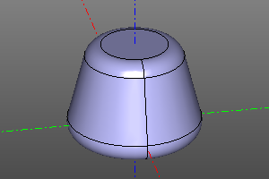
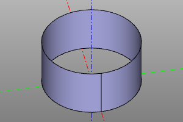
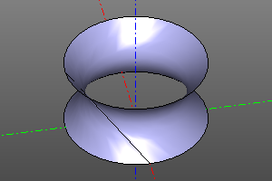
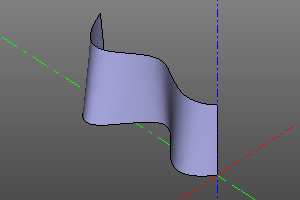
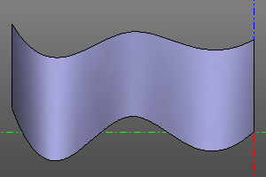

Ссылочная геометрия
Cмещение.
Путём смещения оболочек, строит утолщённое/утончённое тело на основании прототипа proto и радиуса утолщения r. Если r положительный, оболочка смещается наружу, если отрицательный - внутрь.
Сигнатура:
offset(proto, r)
Пример:
offset(cone(r1=15,r2=10,h=20), r=5)

Линейчатая поверхность.
Строит грань, задаваемую линейчатое поверхностью, опирающейся на линии a, b.
Сигнатура:
ruled(a, b)
Пример:
ruled(circle(r=20, wire=True), circle(r=20, wire=True).up(20))
ruled(circle(r=20, wire=True), circle(r=20, wire=True).rotZ(math.pi/2*3).up(20))
ruled(
interpolate([(0,0),(-4,10),(4,20),(-6,30),(6,40)]),
interpolate([(0,0),(-2,10),(2,20),(-4,30),(4,40)]).up(20),
)




Увязка
Построение оболочки на масиве каркасных линий profiles. При активации опции shell вместо твёрдого тела строится оболочка. Активации опции smooth изменяет режим линейчатой поверхности на гладкую апроксимацию. При активной апроксимации опция maxdegree ограничивает максимальную степень полинома.
Сигнатура:
loft(profiles, smooth=False, shell=False, maxdegree=4)
Пример: